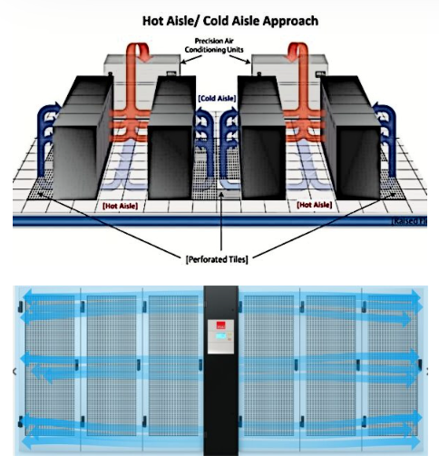
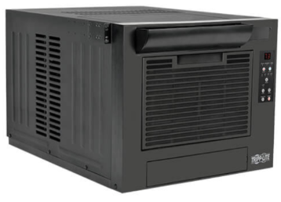
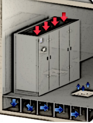
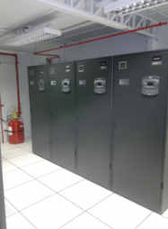
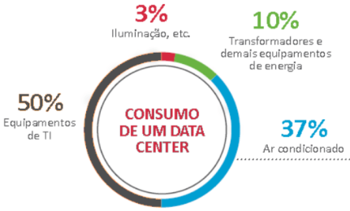
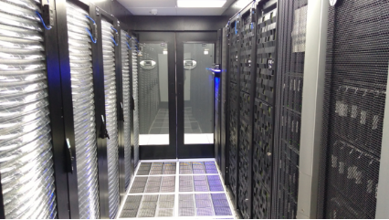
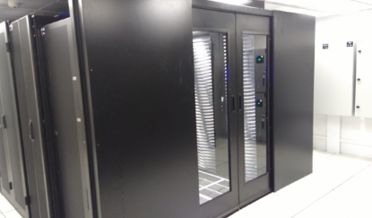

◉ CLIMATIZAÇÃO PARA DATA CENTER
Os sistemas de climatização para Data Centers realizam três tarefas vitais para a segurança de todo ambiente
de missão crítica:
conservar a “saúde” dos equipamentos
manter a capacidade e a velocidade de processamento das informações
evitar paralisações não programadas – os temidos downtimes. Esse é um dos motivos mais importantes e que leva
cada vez mais empresas a investirem em sistemas de ar-condicionado de precisão para Data Centers.
Por quê? Simples: se um Data Center aquece demais, as máquinas paralisam. E cada minuto de inatividade nos
servidores de um Data Center pode custar até 9 mil dólares!
Essa estatística é o resultado de uma pesquisa de mercado encomendada pela Vertiv, multinacional fornecedora
de soluções para o setor de Tecnologia da Informação. De acordo com o estudo:
• Os principais prejuízos gerados por downtimes são as oportunidades de negócios perdidas.
• Ou seja: um Data Center paralisado significa interrupção de vendas e perda de receitas.
• 71% dos modelos de negócio dependem de um Data Center para gerar receita e / ou realizar comércio eletrônico,
de acordo com executivos de nível sênior.
◉ O que é a climatização de precisão para Data Centers?
A refrigeração de Data Centers ideal para garantir segurança, confiabilidade e alta disponibilidade é feita
com um sistema de ar-condicionado de precisão. Usualmente do tipo CRAC – Computer Room Air Conditioning (que
veremos em detalhes a seguir).
Diferentemente de um sistema de conforto (com ar-condicionado comum, como o split), o CRAC é preparado para o
uso contínuo. Isso, claro, porque um Data Center precisa funcionar 24 horas por dia, 365 dias por ano!
Por esse motivo, os sistemas de refrigeração de precisão para Data Centers são projetados para manter a
temperatura, a umidade e a qualidade do ar dentro de parâmetros definidos por normas e métodos internacionais
de boas práticas.
Para que isso ocorra, são monitorados constantemente por sensores eletrônicos. Esses dispositivos identificam
automaticamente variações capazes de afetar o equilíbrio do sistema.
Dessa forma, medidas de correção podem ser imediatamente adotadas – inclusive por controle remoto – para manter
o Data Center em funcionamento com segurança.
Veremos agora por que a alta precisão de um sistema de climatização de Data Center é vital. Isso para controlar
temperatura, umidade e qualidade do ar: requisitos essenciais à saúde e longevidade do Data Center.
◉ Funções da climatização para Data Center
➤ Controle da temperatura
A temperatura ideal de um Data Center gira em torno de 25°C (27ºC no máximo!). Porém, o calor produzido
naturalmente pelo funcionamento das máquinas eletrônicas pode elevar a temperatura do CPD a mais de 50ºC!
O calor excessivo pode queimar equipamentos ou provocar o autodesligamento de máquinas.
Com isso, servidores podem parar, causando a interrupção dos serviços que gera tantos prejuízos!
Por isso é fundamental que ambientes de missão crítica possuam um sistema de refrigeração de Data Center
bem projetado.
➤ Como o aquecimento gera downtimes?
Um exemplo? Se não houvesse ar-condicionado, cinco minutos seriam suficientes para a temperatura dos racks de
uma empresa chegar a 70ºC! E uma parada não programada seria inevitável.
O aquecimento que gera downtimes ocorre porque equipamentos eletrônicos produzem o chamado “calor sensível”.
Trata-se de uma espécie de calor seco. Ou seja: que não se transforma em umidade (como ocorre em nosso corpo,
onde o chamado “calor latente” ou “calor úmido” é dissipado através do suor).
Como o calor das máquinas permanece seco, precisa ser dissipado com a ajuda de um sistema de controle que
insufle ar frio e/ou retire o ar quente de áreas críticas, detectadas por monitoramento eletrônico.
Se isso não for feito corretamente, as máquinas podem superaquecer e entrar em um modo de proteção que provoca
desligamento automático. Ou seja: servidores, switches e todo o Data Center podem simplesmente parar!
Existem várias estratégias que podem ser adotadas para realizar a troca de ar necessária à manutenção da
temperatura ideal, visando ao bom funcionamento dos equipamentos.
E são os estudos feitos durante a elaboração do projeto de climatização de Data Center que definem o melhor
sistema para cada caso, levando em conta requisitos como tipo, tamanho e nível de aproveitamento do ambiente.
➤ Controle da umidade
Sistemas de climatização de precisão são monitorados por sensores de controle ambiental que acompanham não
apenas a temperatura e a qualidade do ar, mas também o nível de umidade do Data Center.
Em um Data Center, a umidade relativa do ar deve permanecer em torno de 50%.
Esse controle é fundamental porque:
umidade alta demais pode condensar água dentro dos servidores, causando, por exemplo, a oxidação de
componentes metálicos.
umidade baixa demais gera carga eletrostática que pode queimar componentes eletrônicos das máquinas.
Ambos os excessos favorecem a proliferação de bactérias, que também prejudicam Data Centers.
➤ Qualidade do ar
Manter a qualidade do ar com um bom sistema de climatização para Data Centers é fundamental para evitar a
circulação de partículas sólidas e contaminantes (como bactérias, fungos e poeira).
Sim: eles também podem prejudicar o funcionamento dos equipamentos do Data Center e até causar downtimes!
A poeira, por exemplo, pode acumular em componentes eletrônicos como processadores, placas, HDs e coolers de
resfriamento. Isso costuma provocar superaquecimento que, como vimos, pode paralisar um Data Center.
É por esse motivo que o ar-condicionado de precisão para Data Centers possui um sistema de filtragem que
limpa o ar, garantindo sua pureza. Tanto que a utilização de filtros de ar com alta eficiência nesse tipo
de equipamento é obrigatória por força de norma.
◉ Tipos de ar-condicionado para Data Center
Existem diversos modelos de condicionadores de ar para Data Centers.
1.Alguns climatizadores funcionam por expansão de temperatura direta. São os chamados CRACS (Computer Room
Air Conditioner).
Eles possuem todo o ciclo de climatização embutido em sua estrutura (compressores, evaporadores, condensadores
e dispositivos de expansão) e são, por isso, os mais utilizados.
2. Outros sistemas de ar-condicionado de precisão para Data Center atuam de forma indireta. São os CRAH (
Computer Room Air Handlers).
Os CRAHS só possuem em sua estrutura ventiladores e serpentina. Por isso, demandam também a instalação de
um dispositivo que forneça água gelada (como um cooler, por exemplo) para que possam funcionar.
3. Há ainda a climatização de Data Center com aparelhos por condensação de ar, onde o calor é expulso por
um condensador instalado do lado de fora do Data Center.
4. E também os modelos que controlam a temperatura por condensação de água. Estes empurram o calor para um
fluido que é bombeado para o condensador instalado fora do Data Center.
◉ Estratégias da climatização de Data Center
Na elaboração do projeto de refrigeração para Data Center, são levados em conta os tipos de condicionadores
de ar e ainda a disposição do sistema de refrigeração no ambiente do Data Center. Nesse sentido, são bastante
usuais os sistemas de climatização que veremos a seguir.
➤ In Row
É constituído de condicionadores de ar instalados entre as fileiras de racks. Nesse modelo, uma fileira de
racks fica de costas para as costas de outra. E um espaço entre elas é mantido para confinamento do ar quente
liberado pelos servidores, que é empurrado para a parte traseira das estantes. Esse ar quente é, então,
captado pelos condicionadores no espaço de confinamento. Já filtrado e resfriado, é liberado na parte dianteira
dos racks para equilibrar a temperatura do ambiente.

➤ Climatização de Data Center In Rack
Nesse sistema, os racks de servidores já possuem espaço próprio para a instalação de ar-condicionado. Portanto,
um condicionador de ar atente apenas um único rack de servidor, enquanto no sistema In Row os condicionadores
de ar atendem mais de um rack ao mesmo tempo.

➤ Refrigeração de Data Center Down Flow
Nesse sistema de climatização, o ar quente gerado pelos aparelhos eletrônicos do Data Center é captado pelas
entradas do CRAC (condicionador de ar). Já tratado e resfriado, o ar é insuflado para um espaço de
confinamento que fica abaixo do piso elevado. Esse ambiente é pressurizado e empurra o ar frio para cima
através de grelhas instaladas no piso. De volta ao ambiente do Data center, o ar frio é puxado por ventoinhas
para dentro dos racks que guardam os servidores. Após resfriar esses equipamentos, é expulso pelas
ventoinhas dos racks, de onde sobe, novamente quente, voltando às entradas do CRAC para recomeçar o ciclo.
Esse sistema é bastante eficiente e amplamente utilizado. Sua única desvantagem é que exige um pé-direito alto,
o que nem sempre é possível num Data Center.


Seja qual for o tipo de refrigeração escolhido, uma regra é universal: quando bem projetado e instalado com
equipamentos de qualidade, o sistema climatização aumenta a eficiência energética do Data Center, reduzindo
o consumo de energia.
◉ Eficiência energética do sistema de climatização
Sistemas de climatização respondem por aproximadamente 40% dos custos energéticos de um Data Center. A
refrigeração, portanto, é a segunda maior consumidora de energia, perdendo apenas para os servidores de um Data
Center.

Para aumentar a eficiência energética e reduzir o consumo do sistema de climatização de Data Center, é
possível adotar medidas como:
• Adotar o uso de chillers. São resfriadores de água utilizados na climatização para manter os ambientes na
temperatura ideal. Recomenda-se que haja redundância, ou seja, a duplicação desse equipamento, para que
o controle térmico seja mantido em caso de falha no chiller principal.
• Utilizar o free cooling, método de troca de calor que aproveita o ar externo para a refrigeração no interior
do Data Center. Cada vez mais projetos mostram que esse sistema mecânico de refrigeração reduz o consumo de
energia elétrica no Data Center.
• Utilizar CRAS de precisão e não splits.
• Usar o método de corredores quentes e frios
• Confinar um dos corredores (quente ou frio) do data center.
• Utilizar painéis de fechamento (tampas cegas) nos racks, fechando os espaços não utilizados por servidores,
para evitar a contaminação do ar quente com o ar frio.
• Utilizar escovas de fechamento do piso elevado para evitar a fuga de ar frio para locais não desejados.
Utilizar grelhas de piso elevado de alta vazão, no caso da climatização downflow.
• Manter a manutenção dos equipamentos sempre em dia, realizando a troca periódica dos filtros e a higienização
dos equipamentos.
• Manter um sistema eficiente de sensores para controle climático e monitoramento ambiental do Data
Center. Alguns sistemas de monitoramento e controle térmico automatizados (como o Liebert, por exemplo)
prometem reduzir o consumo de energia do ar-condicionado do Data Center em até 50%.
◉ Boas práticas na refrigeração de Data Centers
A American Society of Heating, Refrigerating and Air-Conditioning Engineers (Ashrae) é a referência
mundial para boas práticas em projetos de climatização de Data Centers. A Ashrae recomenda algumas ações
de climatização que podem elevar tanto a segurança das operações quanto a eficiência energética dos Data
Centers. As principais medidas são:
➤ Projetar um sistema de resfriamento dedicado ao Data Center
Em outras palavras, não compartilhar condicionadores de ar com outras áreas da empresa
➤ Prover autonomia energética
O sistema de climatização para Data Center deve ser projetado para funcionar ininterruptamente. Para
isso, o Data Center precisa de autonomia energética. Isso pode ser garantido por um grupo motor-gerador
que assuma o abastecimento em caso de cortes no fornecimento habitual de energia.
➤ Criar corredores frios e quentes na refrigeração de Data Center
Uma configuração de CRAC bastante usual e eficaz é resfriar o ar e distribuí-lo por um piso elevado criando
corredores frios e quentes.
Esse sistema viabiliza que o ar quente gerado por computadores e equipamentos do Data Center seja refrigerado
pelo corredor frio na parte frontal dos racks. Para que esse ar frio não aqueça nesse processo, estratégias
como o piso elevado são implantadas para empurrar o fluxo até a parte traseira dos racks, formando o corredor
quente. Isso ocorre da seguinte forma:
O ar condicionado, ou seja, resfriado, sobe por seções perfuradas formando os corredores frios. Esse ar frio
flui pela parte dianteira dos racks, onde resfria o calor irradiado pelos aparelhos eletrônicos. Em
seguida, sai pela parte traseira das estantes de racks.
Esse ar quente de saída forma corredores de ar quente atrás dos racks ou gabinetes. Por sua vez, este ar
quente retorna aos pontos de entrada do CRAC, posicionados acima do piso. Então é condicionado, ou seja
filtrado e resfriado. Uma vez refrigerado, é devolvido à parte dianteira dos racks, onde será utilizado
novamente na refrigeração do sistema.
O controle desse fluxo de climatização do Data Center deve ser projetado para evitar ao máximo a mistura
de ar frio com ar quente criando-se locais isolados de confinamento quentes e frios.
➤ Confinar o ar quente e o ar frio
Consiste em criar áreas isoladas para evitar que o ar quente de saída, empurrado para trás dos racks, volte
a circular. Isso porque a recirculação de ar quente causaria o aquecimento do ambiente.
Por outro lado, o confinamento também evita o chamado “by-pass”. Este ocorre quando o ar frio se desvia do
seu corredor e não chega aos equipamentos. Ou seja: não cumpre sua função de resfriar o calor sensível gerado
pelos componentes eletrônicos do Data Center.
Tanto o confinamento do ar frio quanto do ar quente reduz o trabalho dos equipamentos de climatização,
aumentando a longevidade do sistema e a eficiência energética do Data Center.


◉ Climatização de precisão para Data Centers x climatização convencional de conforto
Em comparação ao sistema de conforto com splits, o ar-condicionado de precisão entrega economia de espaço,
energia e manutenção, aumentando a longevidade, a eficiência, a segurança e a confiabilidade do Data Center.
Isso ocorre porque sistemas de climatização convencionais que utilizam aparelhos comuns são projetados apenas
para garantir conforto térmico às pessoas. Portanto, não possuem uma série de mecanismos de controle inerentes
aos equipamentos de um CRAC.
A climatização de precisão para Data Center possui alto FCS – Fator de Calor Sensível. O FCS indica a capacidade
que o ar-condicionado possui para retirar o calor sensível (calor seco) gerado pelos equipamentos do Data Center.
Enquanto um sistema de refrigeração de conforto (com splits) possui FCS de 0,65, a refrigeração de precisão
para Data Center entrega um FCS de 0,95%. Em termos práticos, o maior FCS do sistema de precisão representa
maior eficiência na refrigeração. E, portanto, menor consumo energético.
Outro ponto que diferencia o sistema de precisão de um sistema criado apenas para proporcionar conforto
térmico às pessoas é a tecnologia de monitoramento da climatização.
O ar-condicionado de precisão para Data Centers possui sistema de controle, umidificador e mecanismo de
reaquecimento. Também quadro elétrico próprio e acuidade de +1°C e -1°C no controle de temperatura e
umidade. Os splits não possuem esses dispositivos.
◉ Por que evitar splits na climatização de pequenos e microdatacenters?
Splits não possuem os mecanismos de controle da climatização de precisão para Data Center. Além disso, não
são desenvolvidos para ambientes com alto calor sensível (seco) – como o gerado pelos equipamentos de um CPD.
Os climatizadores de conforto são projetados para ambientes com grande circulação e pessoas e, portanto,
mais calor latente (úmido). E por isso tendem a retirar umidade do ar.
Essa característica pode prejudicar a eficácia das atividades críticas de um Data Center. E também reduzem
sua eficiência energética, como veremos.
➤ Maior consumo de energia
Cerca de 35% da capacidade do ar-condicionado de conforto é utilizada apenas para remover a umidade do
ar. Isso porque, como vimos, o split é projetado para operar em calor latente (úmido).
Essa característica representa dos splits representa perdas que reduzem a eficiência energética num sistema
de conforto.
Substituindo os equipamentos de ar condicionado de conforto pelos de precisão, há grande economia no consumo
de energia elétrica.
➤ Menor controle da umidade e da qualidade do ar
O ressecamento do ar gerado pelo uso de ar-condicionado convencional dificulta o controle necessário à
climatização para Data Centers.
Além disso, num sistema de conforto é menor o controle da qualidade do ar.
Na refrigeração com alta precisão são utilizados filtros próprios para esses ambientes, seguindo as normas
de qualidade Ashrae.
Mas os condicionadores de ar convencionais utilizam filtros de menor precisão, o que favorece o acúmulo de
poeira e sujeira. Como vimos, isso reduz a eficácia e a eficiência dessas unidades.
Em resumo, a carga de TI pode não ser refrigerada adequadamente, em especial nos dias quentes, quando o
sistema é levado ao limite de sua capacidade.
➤ Desgaste de peças e alto custo com manutenção de Data Center
Além disso, os splits não são preparados para suportar uma carga tão grande de calor quanto a de um Centro
de Processamento de Dados.
A climatização convencional de conforto é projetada para funcionar 8 a 12 horas por dia. E um Data
Center, como sabemos, funciona sem parar.
Essa sobrecarga de trabalho, evidentemente, acaba por gerar desgaste de peças e falhas. O comprometimento
de componentes demanda consertos frequentes que geram alto custo de manutenção.
➤ Riscos de downtime e perdas financeiras
Falhas técnicas geradas pela sobrecarga no sistema de climatização tornam-se ameaça constante. Especialmente
em um ambiente crítico que demanda alta segurança para a preservação de dados e confiabilidade para a
continuidade das operações.
Uma eventual paralisação do sistema de climatização, com vimos, pode provocar downtimes que representam
milionárias a empresas dependentes de operações informatizadas.
Portanto, a adoção de climatização de precisão para Data Centers, apesar de exigir maior investimento
inicial, é notadamente a solução mais segura para ambientes críticos.